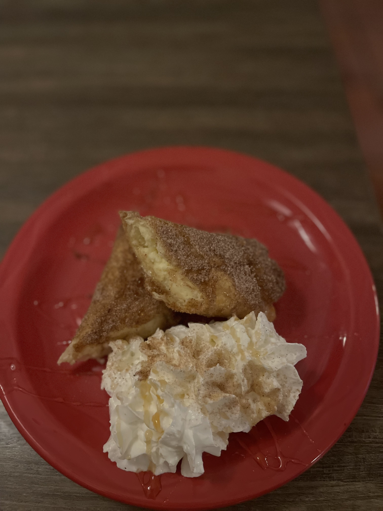

The first dessert is Fried Ice Cream. The fried ice cream is a great dessert for multiple people. It is a vanilla ice cream scoop with Corn Flakes coated around. It is then fried into the fryolator. It is topped with whipped cream, honey, chocolate syrup, and cinnamon sugar. I personally love this dessert because it is really good and melts perfeclty. You do have to make sure you eat it quick because it is ice cream and it melts. The fried ice cream is $4.99 which is good pricing as well as the other desserts.
The next dessert is the Churros. Churros are amazing and everyone knows what they are. If you do not know what churros are, I'll explain it! Churros are a Mexican delight. Churros are a pastry that are coated in cinnamon sugar then topped off with honey, chocolate syrup, and whipped cream. I wish we served them with ice cream but we sadly do not. The churros are $3.99 also good pricing and it comes with 3 churros but sometimes I sneak another churro, if the customer is nice.
Flan is a difficult dessert to try to explain. The flan is a vanilla custard that is cold. It is very sweet like caramel but has a different consistency. It is also served with whipped cream and cinnamon sugar. This is $4.99 because we make them every week. They are fresh when the kitchen does not burn it but it is very delicious. I like to compare it as a Crème Brûlée because it is but a little more sweeter.
Sopapillas are also difficult to explain. Sopapillas are cripsy fried dough, the way I like to describe it to customers is by saying they are big chips but not really like chips that are fried and really sweet because of the honey and whipped cream that is on top of them. It is $3.99 and there is about 4 pieces.
The last dessert is Xangoes. Xangoes are cheesecake filled pastries that are wrapped around a tortilla. They are also deep fried. We like to fry things at La Carreta because everything fried is better! I like the xangoes when I crave them which is not that often. They are cut in half that are coated in cinnamon sugar and honey with whipped cream on the side. Many people like the xangoes because of the cheesecake. Xangoes are $4.99.
